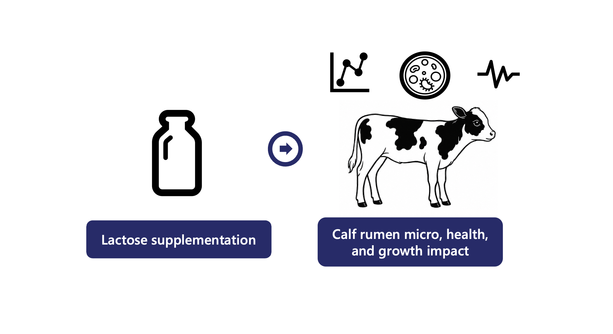

Genomics & Bioinformatics
A longitudinal investigation of early-life lactose supplementation, calf growth, health outcomes, and microbiome development during the pre-weaning period.

Early-life nutrition plays a critical role in shaping calf growth, immune function, gastrointestinal development, and microbial colonization. Lactose is a major carbohydrate source in milk and may influence both host development and microbial ecology during the neonatal period.
This project investigates the effects of early lactose supplementation on calf growth, health outcomes, and longitudinal microbiome development using repeated fecal and oral sampling throughout the pre-weaning period.
Lactose-treated calves
Control calves
Fecal sampling time points
Oral sampling time points
Liao, M.; Bowers, O.; & Cockrum, R. R. Early Lactose Supplementation and Longitudinal Microbiome Development in Dairy Calves.